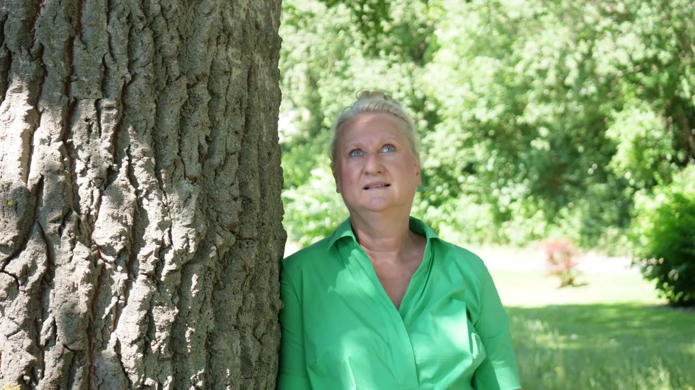
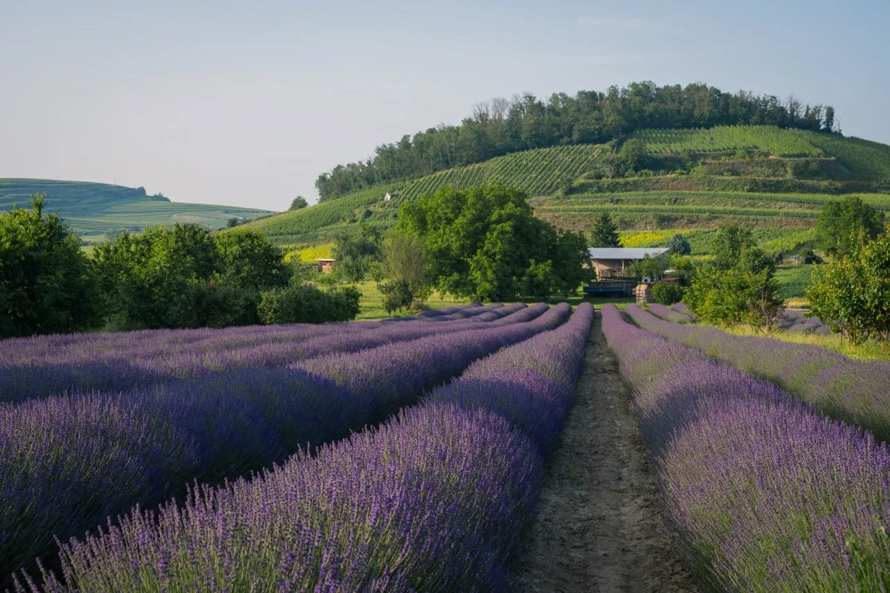

1
Ich entscheide mich
etwa vier Wochen
Klarheit gewinnen. Wahrheit erkennen. Entscheidung treffen.
Apollon › Der feminine Ausstieg
Wege in Bewegung
Irgendwann ist kein Datum. Wann bist du endlich dran, dein eigenes Leben zu leben?
Das Leben wartet nicht auf den perfekten Zeitpunkt. Es wartet auf deine Entscheidung.
Du musst nur den Mut haben, den ersten Schritt zu gehen.
Du stehst zwischen Abschied und Aufbruch.
Nicht alles muss heute entschieden werden.
Aber eines schon:
Gehst du weiter, oder bleibst du stehen?

Marion Bernard
Mit 24 bin ich allein nach Afrika gegangen.
Heute beginne ich mit 60 noch einmal neu.
Nicht, weil ich musste.
Sondern weil ich meinem Leben vertraue.
Ich rede nicht über Aufbruch.
Ich lebe ihn.
Es beginnt mit einer Entscheidung.
Nicht weil alle Fragen beantwortet sind.
Nicht weil die Angst verschwunden ist.
Sondern weil du dir selbst endlich wichtiger wirst.

Wo stehst du heute?
1
etwa vier Wochen
Klarheit gewinnen. Wahrheit erkennen. Entscheidung treffen.
2
etwa drei Monate
Die ersten Schritte gehen. Vertrauen aufbauen. Das neue Kapitel beginnen.
3
etwa sechs Monate
Das neue Leben konsequent gestalten und dauerhaft verankern.
Was ein Weg umfasst und was er kostet, besprechen wir persönlich. Das hängt davon ab, wo du stehst, und lässt sich nicht auf einer Seite beantworten.
Noch nicht sicher?
Wenn eine Bewerbung dir gerade zu groß ist, ist das Buch der leisere erste Schritt. Dieselbe Haltung, in deinem eigenen Tempo.
Du hast nur dieses eine Leben.
Lebe es.
Ich arbeite nur mit Frauen, bei denen ich spüre: Jetzt ist ihre Zeit.